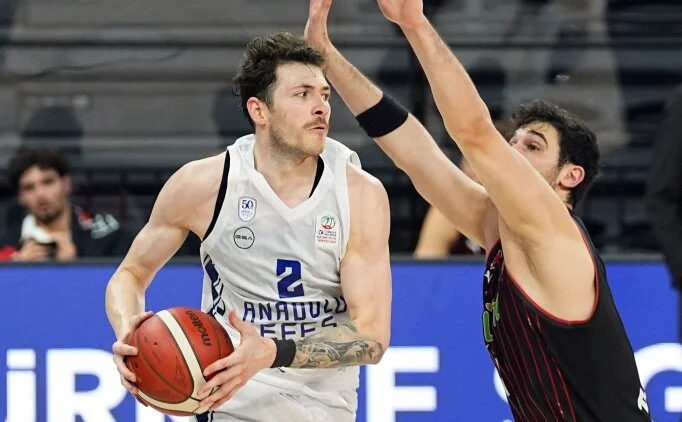

Anadolu Efes'ten **Euroleague'de Kritik Galibiyet!**
Yayınlanma Tarihi: 02 Aralık 2025
Temsilcimiz Anadolu Efes, Euroleague'de deplasmanda karşılaştığı zorlu rakibini nefes kesen bir mücadele sonunda **88-85** mağlup ederek zirve takibini sürdürdü. Maçın özellikle son çeyreği, savunma sertliği ve hücum isabetleriyle adeta bir final havasında geçti.
Baş Antrenör, maç sonrası yaptığı açıklamada, takımın karakterini ortaya koyduğunu ve bu galibiyetin play-off yolunda moral açısından büyük önem taşıdığını belirtti. "Rakibimiz çok iyi hazırlandı, ancak oyuncularım son dakikalarda gösterdikleri soğukkanlılık ile maçı çevirmeyi başardı. Bu, sadece bir galibiyet değil, aynı zamanda mental gücümüzün de bir göstergesidir," dedi.
🌟 Yıldız Oyuncudan Kariyer Rekoru
Maçın yıldızı ise attığı 32 sayı ve 7 asistle oynayan Shane Larkin oldu. Larkin, özellikle üçüncü çeyrekte arka arkaya bulduğu üçlüklerle takımın oyuna tutunmasını sağladı ve kritik anlarda sorumluluk alarak galibiyetin mimarı oldu. Bu performans, Larkin'in sezon içindeki en etkili performansı olarak kayıtlara geçti.
Bu galibiyetle birlikte Anadolu Efes, ligdeki dengeleri değiştirecek önemli bir avantaj elde etti. Play-off hattındaki yerini sağlamlaştıran temsilcimiz, önümüzdeki hafta evinde oynayacağı karşılaşmaya daha moralli çıkacak.